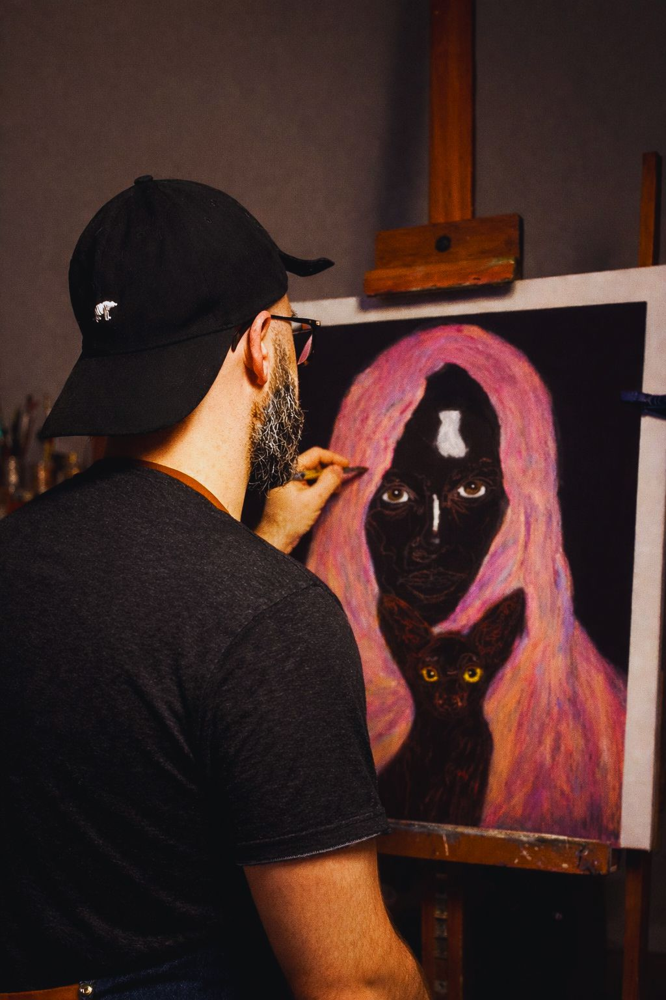

Kaplou · Artiste plasticien · BailleulLa couleur
La couleur
du vivant.
Je peins ce qui me plaît, ce qui m’émerveille et me donne envie de raconter une histoire. Le vivant, les couleurs et les matières nourrissent mes créations.
Découvrir les œuvres Élan des profondeurs · Kaplou
Élan des profondeurs · Kaplou01 / Découvrir
Œuvres disponibles.
Des créations à découvrir, à rencontrer et peut-être à adopter.
Découvrir les œuvres disponibles ↗
02 / L’artiste
L’artiste.
Je crée pour partager, explorer et donner forme à ce qui m’émerveille : le vivant, la matière et les couleurs.
À Bailleul, je développe une pratique entre peinture, sculpture et recherches plastiques, au sein de mon Atelier Art en Partage.
Faire connaissance ↗03 / Notes et recherches
Carnet d’atelier.
Essais, observations, matières et rencontres, au fil de la création.
Feuilleter le carnet ↗Une œuvre vous parle ?
Écrivons la suite.
Une question, une rencontre, une exposition ou une création à découvrir ?
Me contacter ↗